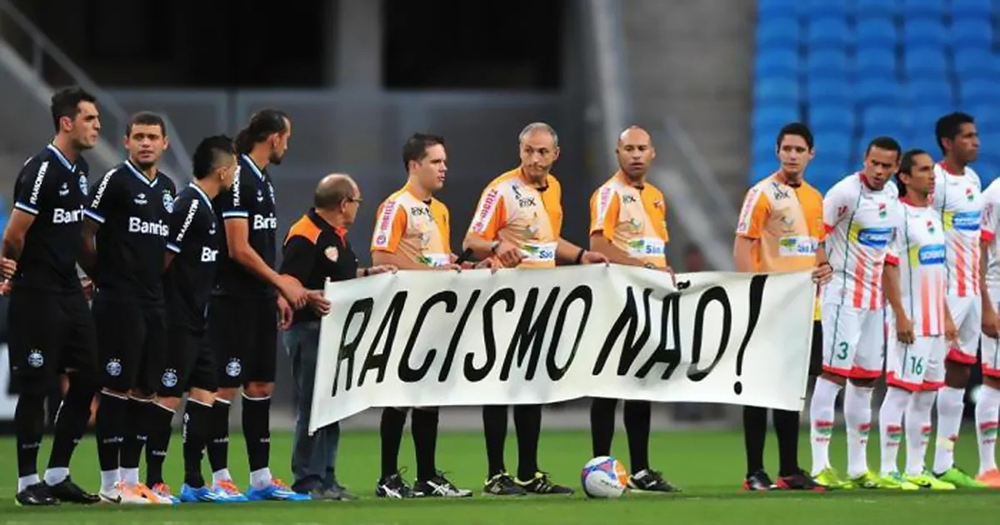
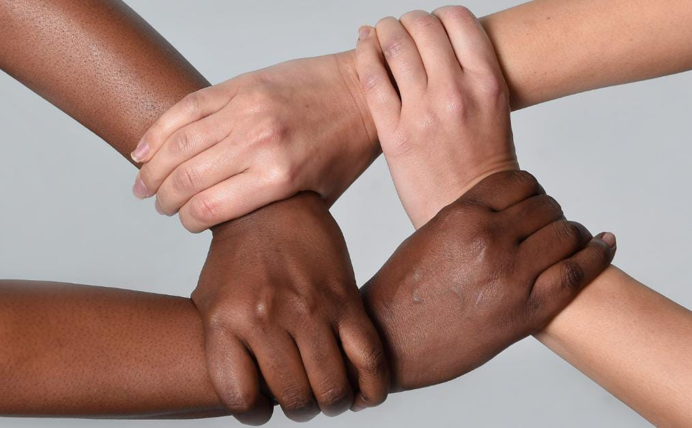

Desafios à persistência do racismo no esporte brasileiro
1x0 para o racismo
ㅤㅤNo livro “O Negro no Futebol Brasileiro”, Mario Filho expõe o racismo enraizado nos primórdios do esporte.
Análogo à ficção, os preconceitos raciais se mostram constantes nos cenários esportivos. A fim de romper este ciclo
de intolerância, é necessário políticas públicas para inclusão, punições rigorosas para atos discriminatórios, e
participação de negros em todas as áreas do desporte.
ㅤㅤA princípio, é valido salientar que o racismo no esporte tem relação direta a história e visão eurocêntrica que foi
imposta na sociedade, na qual sugere que o negro não deve ocupar espaços de notoriedade. Por exemplo, a
Libertadores da Sul-Americana de 2023 registrou oito denúncias de racismo envolvendo brasileiros, foi denunciado o
caso do Atlético-MG, quando torcedores do Club Libertad foram flagrados chamando o goleiro Éverson Felipe de
“macaco”, pela globo.com. Essa banalização do racismo tem como consequência os comportamentos discriminatórios
relativos à raça.
ㅤㅤSob esse viés, as comissões esportivas negligenciam as ocorrências de racismo durante as partidas
desportivas, visto que essas condutas criminosas são justificadas pela rivalidade entre os times e não são punidas
devidamente. O racismo no futebol vem sendo naturalizado pela falta de políticas eficientes contra o preconceito racial
no esporte. Segundo o Observatório da Discriminação Racial do Futebol, houve um aumento de 40% nas ocorrências
de racismo em 2021 a 2022. Sob essa perspectiva reforça e propaga o comportamento racista estrutural do
Brasil nos esportes.
ㅤㅤAdemais, existem medidas governamentais para combater o racismo no Brasil, a lei que pune injúria racial,
elas não são devidamente aplicadas em decorrência da omissão governamental. A professora Katia Rubio e Neilton
Sousa aborda uma ampla lista de dificuldades enfrentadas pelos atletas negros em seu livro” Racismo e Esporte no
Brasil: um panorama crítico e propositivo”. Sendo assim, essas dificuldades incluem desigualdade, limites e
discriminação. Isso evidencia a necessidade de uma maior fiscalização e aplicação das leis existentes, que abordem
especificamente o racismo no esporte.
ㅤㅤ Por tanto, através do Ministério do Esporte, é necessário ampliação de políticas anti racistas com punição
condigna para esse delito e a adoção de doutrinas mais rigorosas dentro dos ambientes competitivos por meio das
organizações esportivas, a Confederação Brasileira de Futebol (CBF). Com a lei sendo cumprida no Brasil, tendo um
jogo justo e igualitário.
Autores da redação: Érica Beatriz, Maria Eduarda, Vinícius Morais

